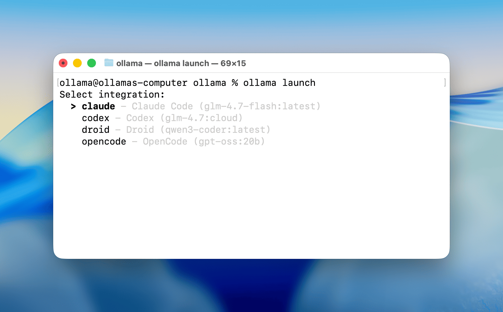
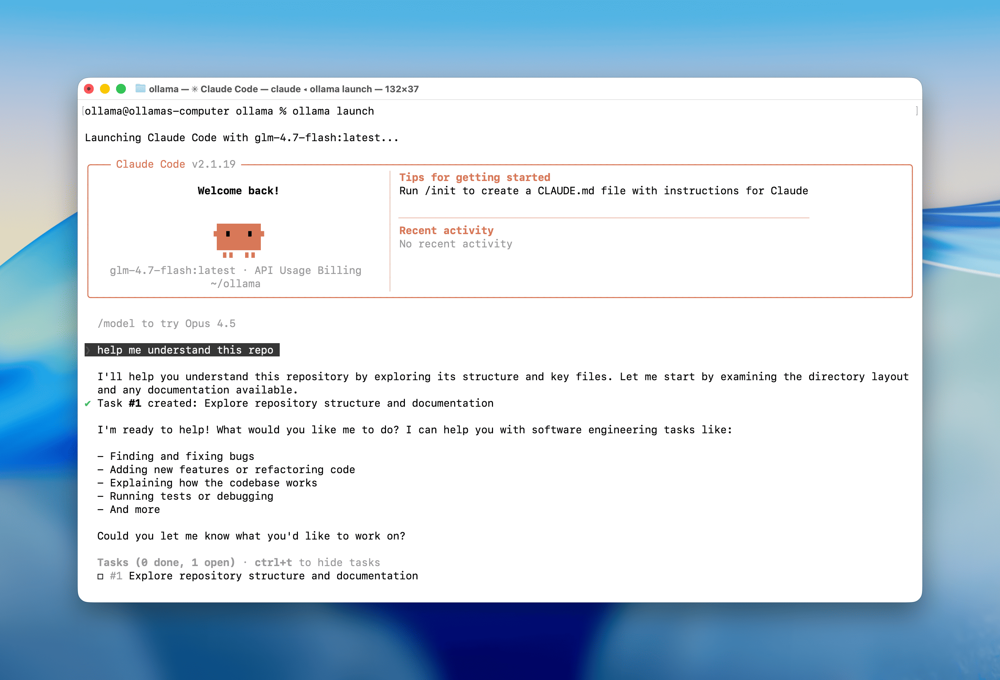
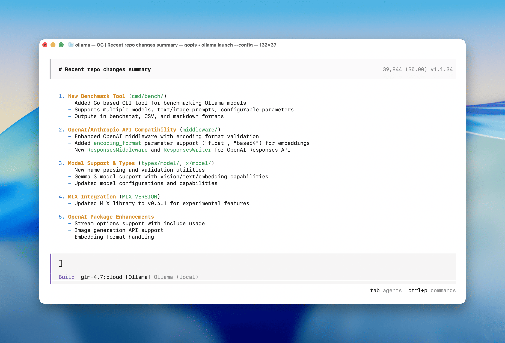

ollama launch
January 23, 2026

ollama launch is a new command which sets up
and runs your favorite coding tools like Claude Code,
OpenCode, and Codex with local or cloud models. No
environment variables or config files needed.
Get started
Download Ollama v0.15+, then open a terminal and run:
# ~23 GB VRAM required with 64000 tokens context length
ollama pull glm-4.7-flash
# or use a cloud model (with full context length)
ollama pull glm-4.7:cloudOne command setup
Claude Code:
ollama launch claude
OpenCode:
ollama launch opencode
This will guide you to select models and launch your chosen integration. No environment variables or config files needed.
Supported integrations
- Claude Code
- OpenCode
- Codex
- Droid
Recommended models for coding
Note: Coding tools work best with a full context length. Update the context length in Ollama's settings to at least 64000 tokens. See the context length documentation on how to make changes.
Local models:
glm-4.7-flashqwen3-codergpt-oss:20b
Cloud models:
glm-4.7:cloudminimax-m2.1:cloudgpt-oss:120b-cloudqwen3-coder:480b-cloud
Extended coding sessions
If you have trouble running these models locally, Ollama also offers a cloud service with hosted models that has full context length and generous limits even at the free tier.
With this update Ollama now offers more usage and an extended 5-hour coding session window. See ollama.com/pricing for details.
Configure only
To configure a tool without launching it immediately:
ollama launch opencode --config